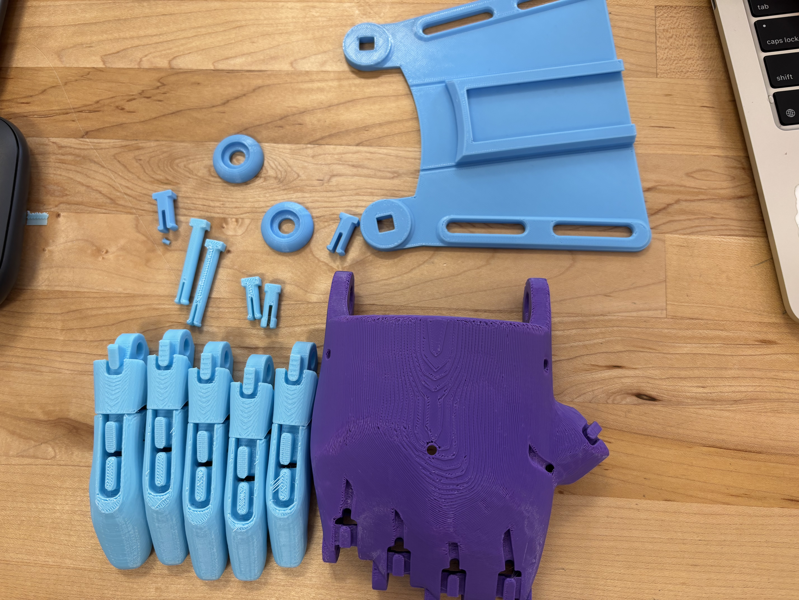
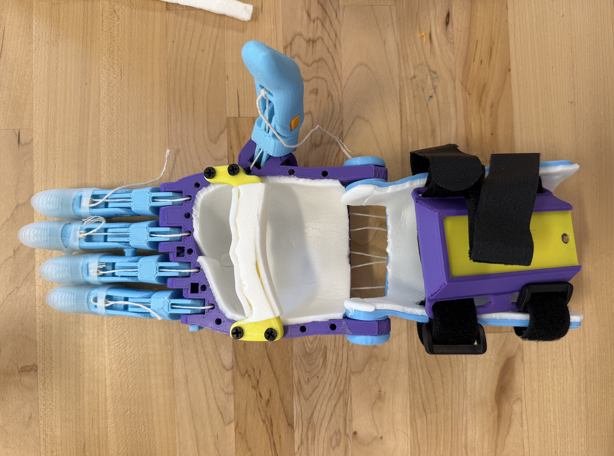
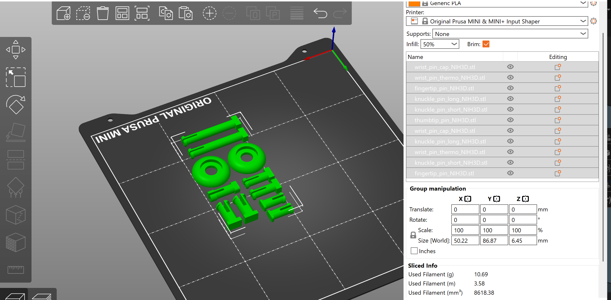
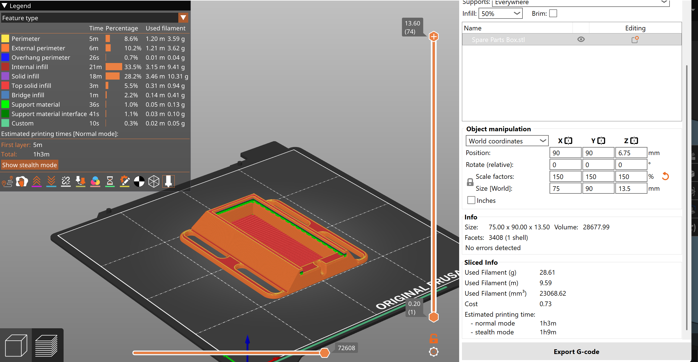

Building and Assembling the V-2 Phoenix Hand

Throughout this design process, my team and I focused on addressing a real-world problem faced by many older adults with dementia or memory-related conditions: difficulty managing medications independently. Our goal was to design an automated pill dispenser that could organize medication clearly, rotate automatically, and stop at the correct compartment using a sensor-based system. We defined success based on several measurable criteria, including whether the dispenser could consistently stop at the intended compartment, whether the Hall sensors reliably detected the magnets, and whether the system could support ease of use and independence for the user. Although the prototype was not fully functional in its final integrated form, we were still able to validate important parts of the design process through testing individual systems and evaluating the reliability of the detection mechanism.
One of our main validation tests involved measuring how consistently the Hall sensors could detect magnets while the wheel rotated. During testing, some magnets were successfully detected while others were missed because of spacing, alignment, and distance between the magnets and sensors. If the design were fully functional, we would quantitatively measure success by tracking the percentage accuracy of successful stops over repeated rotations, as well as measuring response time and alignment precision between compartments. We also evaluated the design qualitatively by considering whether the compartment layout would be intuitive and accessible for users who struggle with memory management. Feedback from others and our own testing process showed that the organizational structure of the 15 compartments was clear and practical, even though the stopping mechanism still required refinement.k reprint, in situations where time or resources are limited, this could create a more significant issue.
The iteration cycles taught me that engineering design is rarely a straight path and that failure is often one of the most valuable parts of the process. The CAD redesigns made the biggest difference because they directly impacted the spacing, alignment, and physical feasibility of the rotating system. Through multiple iterations, we realized that even small adjustments in scale or placement could significantly affect sensor performance. Our CAM and electronics changes also helped us better understand how code, motors, and sensors interact in a real physical system rather than only in theory. When our original stopping mechanism proved inconsistent, we pivoted by analyzing the source of the issue instead of abandoning the concept entirely. This led us to consider larger magnets, increased spacing, and scaling up the design to improve reliability.
If I had more time, I would focus primarily on refining the integration between the mechanical and electrical systems. I would redesign the structure to allow more consistent Hall sensor positioning and improve tolerance between rotating and stationary components. I would also perform more extensive quantitative testing, including repeated automated trials to collect accuracy data and identify failure patterns. In addition, I would experiment with stronger magnets, different sensor placements, and potentially alternative detection systems. Overall, this project taught me the importance of iteration, testing, and adaptability in engineering design. Even though the final prototype was not fully successful in every aspect, the process provided valuable insight into how complex systems are developed, tested, and improved over time.
One of the most challenging aspects of the build was managing the stringing system, as it required careful placement, routing, and tensioning to function properly. Small mistakes in string placement or uneven tension could significantly affect how the fingers moved. For improvement, I would suggest including more detailed instructions, especially with additional images or diagrams showing exactly where each string should be placed at each step. Another difficult step was shaping the gauntlet to fit comfortably with the hand. The instructions showed the final result but did not clearly explain how to achieve the correct shape or how much force or heat should be applied. A possible improvement would be to include guidance on heating the PLA safely, such as using a controlled heat source to gradually bend the material without damaging it. Additionally, providing a reference shape, template, or mold could help ensure more consistent results across builds. As an alternative approach, the gauntlet could be redesigned in a CAD software like Onshape to better match the hand and reduce the need for manual bending, even if this increases print time slightly.

As a contribution to the open-source community, my partner and I created a list of all the required parts needed to assemble a fully functional Phoenix Hand. This helps simplify the process for future users by ensuring that no components are overlooked or accidentally skipped during printing. We also encountered an issue with scaling, where even after increasing the size of the hand to 150%, some parts such as the screws did not fit securely and would fall out during use. Based on this, we would recommend scaling smaller components slightly more, around 160 - 165%, to ensure a tighter and more reliable fit. Additionally, we designed an extra gauntlet attachment that can hold spare screws and small parts, which connects using Velcro straps. This small addition improves usability, organization, and convenience for the user, especially when adjustments or repairs are needed.
This project highlights several important ideas related to inclusive design and the ethics of creating assistive technology. One key principle from the Microsoft Inclusive Design Toolkit is designing for one while extending to many. The Phoenix Hand is designed to meet the needs of individuals with upper limb differences, but because it is open source, it can be adapted and modified to fit a wider range of users. This flexibility makes it more accessible compared to traditional prosthetics, which are often expensive and less customizable. Another important idea is recognizing exclusion. While this design makes assistive technology more affordable, it still assumes that users have access to a 3D printer, materials, and the technical knowledge needed to assemble the device. This means that some individuals, especially those without access to these resources, may still be left out. Additionally, this project raises questions about the limitations of a volunteer-driven model for medical or assistive devices. While open-source designs allow for collaboration and innovation, they may lack consistency in documentation, quality control, and reliability. As seen in this project, unclear instructions and missing parts can make the process more difficult, which could be a bigger issue in more critical situations. Overall, while open-source assistive technology increases accessibility and encourages community-driven solutions, it also depends heavily on user skill and available resources, which can limit who truly benefits from it.
Through this project, one area that stood out for further exploration is improving the usability and reliability of open-source assistive devices, especially during the assembly process. A key challenge was the lack of clear instructions and difficulty in achieving precise alignment and tension, which directly affected how well the hand functioned. This suggests an opportunity to design tools, guides, or modified components that make assembly more intuitive and consistent. For a future project, I would be interested in focusing on how to simplify the building process or improve grip functionality, particularly for everyday tasks that require stability and coordination.

Figure 5: Settings 1

Figure 6: Settings 2